From personality to phisical description, this character creation aims to build a characters that can generate good, deep and diverse narratives.
Most of this part will be based in the Ash’s Guide to RPG Personality & Background. Of course it its not a carbon copie, some modifications will be needed to fit his tables in the system. Anyway, credits must be given and you should check out his guide.
The first thing in creating a character's personality will picking two motivations. One of them will be your main motivation, and the other will be the secondary motivator. Combining them, with an emphasys on the first one, the player will be able to make decisions grounded on what his character really wants. Broadly talking a basic purpose is the primary turbine of a types history. It is the latent theme of a characters position and on a deeper level what eventually drives their behavior.
| 1. Achievement | To overcome obstacles and succeed; to become the best |
| 2. Acquisition | To obtain possessions/wealth |
| 3. Adoration | To be cherished, admired, and wanted by others |
| 4. Balance/Peace | To bring all things into harmony and equilibrium |
| 5. Beneficence | To protect the helpless, heal the sick, feed the hungry, etc. |
| 6. Chaos | To disrupt, to cause confusion and discord |
| 7. Competition | To seek out or create rule-based win/lose scenarios; to defeat others in contests |
| 8. Conflict | To seek out or create rivalry, fighting, or animosity |
| 9. Conquest | To conquer other peoples, to bring them into one’s own culture/rule |
| 10. Corruption | To despoil, ruin, humiliate, or make depraved |
| 11. Creation | To build or make new, such as art, culture, invention, design,etc. |
| 12. Destruction | To annihilate, exterminate, and unmake |
| 13. Discovery/Adventure | To explore, uncover mysteries, and pioneer |
| 14. Domesticity | To get married, have children, and live a family life |
| 15. Education | To provide information, teach, enlighten, or train |
| 16. Entertainment | To entertain, amuse, and delight others |
| 17. Enslavement | To force others into servitude |
| 18. Hedonism | To enjoy all things sensuous |
| 19. Heroism | To find valor and honor through battle or self-sacrifice |
| 20. Liberation | To free the self and/or others from perceived captivity or enslavement |
| 21. Love | To experience/share affection and emotional commitment, romantic or platonic |
| 22. Nobility/Honor | To exalt ideals such as generosity, honesty, bravery, and courtliness |
| 23. Order | To arrange, organize, and reduce chaos |
| 24. Play | To have fun, to enjoy life |
| 25. Power | To control and lead others |
| 26. Proselytization | To spread a belief system; indoctrinate others |
| 27. Purity | To achieve a state of moral or spiritual perfection, of self and/or others |
| 28. Rebellion | To fight against power structures; to undermine authority |
| 29. Recognition | To gain approval, social status, or fame |
| 30. Service | To follow a person, government, order, religion, etc. |
| 31. Torment | To inflict pain and suffering, on others and/or the self |
| 32. Understanding | To seek knowledge or wisdom (spiritual, scientific, magical, etc) |
| 33. Vice | To enable or engage in self-destructive behavior |
Emotional Disposition describes the overall emotional set or "resting state" of the character. This doesn`t mean that the character is limited in disposition, it just informs you of the emotion that character is most likely to feel at a given one. This trait can be used to help you understand how your character is likely to react emotionally to a situation, as well as how he appears to For example, a predominantly cheerful person will act and talk about one that tends toward anxiety or contempt. Finally, don’t make the mistake of correlating the disposition with alignment-it is possible to be joyfully evil and angrily good.
| 1. | Joyful |
| 2. | Anxious |
| 3. | Melancholy |
| 4. | Curious |
| 5. | Calm |
| 6. | Angry |
| 7. | Contemptuous |
| 8. | Excited |
| 9. | Apathetic |
| 10. | Ashamed |
Moodiness refers to how easily one experiences intense emotion. Labile characterizes being quick to undergo deep feelings and Phlegmatic defines being psychologically consistent and moderate.
| 1. | Labile |
| 2. | Even-tempered |
| 3. | Phlegmatic |
Outlook is one’s basic worldview, interpreting the world as being essentially good or bad.
1. Optimistic
Idealistic, confident, trusting, hopeful, upbeat
2. Pessimistic
Cynical, bleak, distrustful, foreboding, resigned
Basic values regarding work and social interactions.
1. Conscientious
Industrious, honest, responsible, meticulous, pragmatic
2. Unscrupulous
Lazy, deceitful, unreliable, manipulative, slipshod, impractical
The ability to regulate one’s thoughts and actions.
1. Controlled
Deliberate, focused, steady, thoughtful
2. Spontaneous
Capricious, flighty, hyperactive, rash
Willingness to face danger and enter into battle.
1. Intrepid
Daring, reckless, valorous, dauntless, audacious, confident
2. Cautious
Timid, paranoid, vigilant, nervous, tentative
General attitude towards people and the ability to handle new situations, tough choices, and interpersonal conflicts.
1. Agreeable
Warm, empathic, tolerant, forgiving, open-minded, adaptable, altruistic
2. Disagreeable
Cold, rigid, tense, intractable, narrow-minded, cantankerous, stingy
Style and degree to which your character interacts with others.
1. Engaging
Talkative, candid, entertaining, touchy
2. Reserved
Shy, loner, taciturn, evasive, cryptic
Basic relationship with cultural norms.
1. Conventional
Orthodox, formal, down-to-earth, mainstream, traditional
2. Heterodox
Rebellious, arty, shocking, freethinking, exotic
| 1 | Crude |
| 2 | Dry |
| 3 | Slapstick |
| 4 | Jokey |
| 5 | Cynical |
| 6 | Prankster |
| 7 | Mean-spirited |
| 8 | Gleeful |
| 9 | Surreal |
| 10 | None |
It can be helpful to list out three or four topics that your character defaults to in casual social situations. The basic rule of thumb is that people like to talk about what they are good at and things they find interesting. So, look at your character’s skills, hobbies, training, and background to see what they might be into.